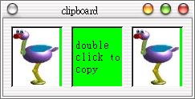

Qt
的QLineEdit或QMultiLineEdit等類別本身就提供有copy、cut與paste等剪貼功能，然而我們若要自訂某些元件的剪貼功能，
就必須使用QApplication的Clipboard物件，這是由QApplication::clipboard()方法所提供。
在Qt中，將剪貼的功能視作一種拖曳（drag）功能，將物件拖入剪貼簿就是「複製」，將物件拖出剪貼簿並指定至目的地就是「貼上」，所以我們需要拖曳物
件QDragObject，將來源設定至QDragObject中，並使用Clipboard物件的setData()方法將QDragObject設定
至剪貼簿。
我們使用Clipboard物件的data()方法可以將剪貼簿的資料取出，取出後是QMimeSource物件，我們必須對它進行decode()，然後設定至對象物件。
下面這個程式可以讓QLabel貼有剪貼的功能，按兩下是複製，在最右邊的QLabel按一下是貼上，它可以複製圖片或文字至上面：
#include <qapplication.h>
#include <qhbox.h>
#include <qlabel.h>
#include <qdragobject.h>
#include <qclipboard.h>
class ClipLabel : public QLabel {
public:
enum labelType {Sor, Des};
ClipLabel(QWidget *parent, int type) : QLabel(parent), labeltype(type) {
setFrameStyle(QFrame::Sunken + QFrame::WinPanel);
setBackgroundColor(Qt::green);
}
protected:
void mousePressEvent(QMouseEvent *) {
if(labeltype == Des) {
QString str;
QPixmap pm;
// 取出剪貼簿物件
QMimeSource *clip = qApp->clipboard()->data();
// 判斷類型並解碼
if(QTextDrag::decode(clip, str))
setText(str);
else if(QImageDrag::decode(clip, pm))
setPixmap(pm);
}
}
void mouseDoubleClickEvent(QMouseEvent *) {
QDragObject *drobj = 0; // 這個物件會自動清除
if(pixmap()) // 如果有圖片
drobj = new QImageDrag(pixmap()->convertToImage(), this);
else if(text()) // 如果有文字
drobj = new QTextDrag(text(), this);
// 指定至剪貼簿
if(drobj) qApp->clipboard()->setData(drobj);
}
private:
int labeltype;
};
int main(int argc, char **argv) {
QApplication app(argc, argv);
QHBox *hbox = new QHBox();
hbox->setMargin(10);
hbox->setSpacing(10);
ClipLabel *lab1 = new ClipLabel(hbox, ClipLabel::Sor);
lab1->setPixmap(QPixmap("wuwu.jpg"));
ClipLabel *lab2 = new ClipLabel(hbox, ClipLabel::Sor);
lab2->setText("double \nclick to\ncopy");
ClipLabel *lab3 = new ClipLabel(hbox, ClipLabel::Des);
lab3->setText("Click me");
app.setMainWidget(hbox);
hbox->show();
return app.exec();
}
下圖為執行畫面（已複製圖片至右邊）：

|
|